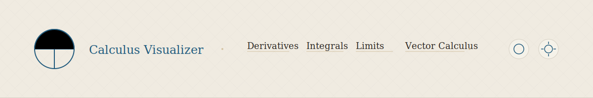
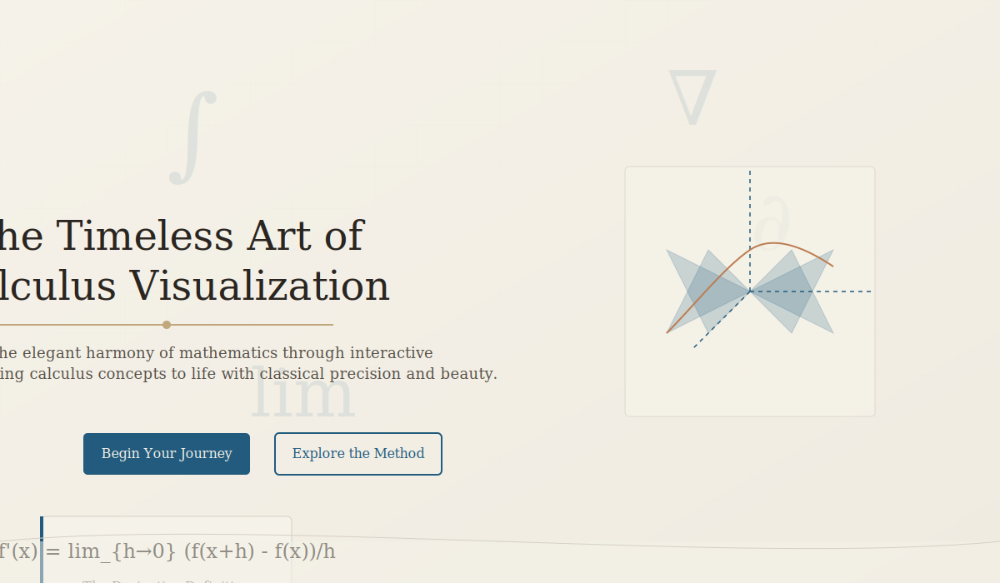
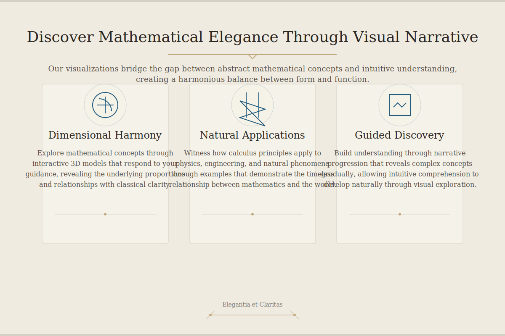
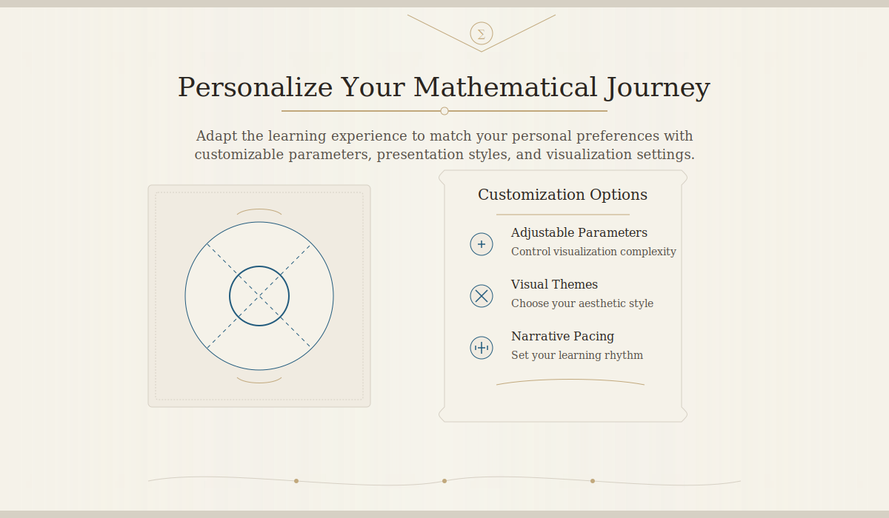

Classical Design Mockups for Calculus Visualizer
1. Header with Classical Proportions
The header design utilizes classical proportions and visual balance to create a harmonious, elegant appearance that frames the application content.

Key Implementation Notes
- Maintain golden ratio proportions between elements
- Use subtle background textures inspired by classical materials
- Implement refined hover effects with gold accents
- Ensure balanced spacing between navigation items
2. Hero Section with Narrative Focus
The hero section creates a compelling narrative introduction to the application, using classical composition principles to guide users through content.

Key Implementation Notes
- Central composition with balanced elements
- Subtle animation of mathematical symbols
- Typography with clear hierarchy and classical proportions
- Visual weight distributed according to importance
3. Feature Preview with Classical Visual Hierarchy
The feature preview section applies classical principles of visual hierarchy and balance to present key application features in an elegant, organized manner.

Key Implementation Notes
- Rule of three in card layout for visual balance
- Consistent spacing based on golden ratio
- Ornamental details that enhance without distracting
- Strong visual hierarchy through typography and spacing
4. Customizable Section with Architectural Inspiration
The customizable section draws inspiration from classical architecture to create a structured, elegant presentation of customization options.

Key Implementation Notes
- Subtle column motifs in background patterns
- Two-column layout based on golden ratio proportions
- Scroll-inspired container designs
- Classical ornamental details in section dividers